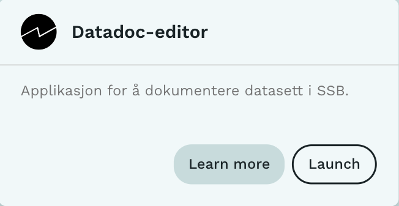

Datadoc

Datadoc er et tjeneste som tilbyr et grafisk grensesnitt for å dokumentere datasett og variablene som utgjør datasettet. Formålet med tjenesten er å tilby et lett-å-bruke grensesnitt som hovedsakelig vil benyttes første gang man dokumenterer en type datasett.
Siden løpende statistikkproduksjon ofte innebærer at nye data legges til data fra tidligere perioder, uten at strukturen i datasett endres, så tilbys det også et annet verktøy som lar brukeren programmatisk gjenbruke metadata fra en tidligere periode. Les mer om Python-pakken dapla-toolbelt-metadata.
Forberedelser
Før man starter Datadoc-tjenesten bør man ha lest kapitlet om Dapla Lab. Deretter gjør du følgende:
- Logg deg inn på Dapla Lab
- Under Tjenestekatalog trykker du på Start-knappen for Datadoc
- Gi tjenesten et navn
- Åpne Datadoc konfigurasjoner og gjør ønskede konfigurasjoner (se neste kapittel).
- Trykk Start igjen for å åpne tjenesten.
Datadoc bruker ca. 1 minutt på starte og etter det klart for dokumentere datasett.
Konfigurasjon
Før man starter Datadoc bør man konfigurere tjenesten. Dette er spesielt viktig siden du bare kan representere et Dapla-team for hver Datadoc man starter. I tjenestekonfigurasjonen til Datadoc er det 2 faner: Dapla og Tjeneste.
Dapla
Under fanen Dapla i Datadoc konfigurasjoner er det en nedtrekksmeny der man kan velge Team og tilgangsgruppe. I nedtrekksmenyen får du listet alle team og tilgangsgrupper du er med i. Listen i nedtrekksmenyen vises på formen <daplateam>-<tilgangsgruppe>. Figur 1 viser tilfellet der det er valgt å representere tilgangsgruppen developers i teamet Dapla Felles, derav dapla-felles-developers. Det er også det som velges som standard hvis man ikke velger noe annet.
Tjeneste
Under fanen Tjeneste kan man velge versjon av tjenesten. Det vil være svært sjelden at brukere trenger å endre på noe her. Som standard åpnes alltid siste versjon av tjenesten.
Datatilgang
Når man starter en Datadoc-tjeneste så må man på forhånd velge hvilket team og tilgangsgruppe man skal representere, som forklart i forrige kapittel.
Det er ikke mulig å velge andre tilgangsgrupper enn developers for øyeblikket. Av den grunn kan man ikke bruke Datadoc til å dokumentere kildedata enda.
Funksjonalitet
Åpne datasett
Før man kan benytte Datadoc, må man åpne et Datasett. Det gjøres enkelt ved å lime inn stien til datasettet i Filsti tekstboksen (Punkt 1 i Figur 2) og trykke på Åpne fil knappen (Punkt 2 i Figur 2).
Datadoc benytter brukerens innloggingsopplysninger for å aksessere data. Det betyr at man i utgangspunktet har tilgang til de samme filene som ellers på Dapla.
Man må inkludere gs:// på begynnelsen av stien når man jobber med et datasett i en bøtte.
Man kan finne filstien gjennom Google konsollet eller ved å benytte Dapla toolbelt
Vellykket åpning
Etter at man har trykket på Åpne fil knappen bør man se meldingen vist i Figur 3
Vellykket åpning med advarsel
Hvis man åpner en datasett som ikke følger navnestandarden, vil det komme en advarsel (Figur 4). Det er fullt mulig å bruke Datadoc fortsatt for å dokumentere datasettet, men ikke like mye metadata kan utledes automatisk (TODO: lenke til seksjonen om utledning).
Dette kan være en fin anledning til å justere på navngivning og strukturen i teamets bøtter slik at alt følger navnestandarden. Det er en lenke til navnestandarden i meldingen.
Feil ved åpning
Hvis Datadoc klarer ikke åpne datasettet, vises en rød error melding (Figur 5). Dette forårsakes oftest at filen ikke finnes (for eksempel på grunn av en typo i filstien), men kan også være på grunn av at man ikke har tilgang til filen, eller at det er et brudd i nettverket.
Åpne et datasett når metadatadokument eksisterer
Hvis et metadatadokument eksisterer, er det denne informasjonen som lastes inn. Det utledes ingenting fra datasettet.
Utledet informasjon
Informasjon som kan utledes vil bli fylt inn når du åpner datasettet. Informasjonen hentes enten fra filstien eller settes inn som en default verdi (*). Det er mulig å korrigere informasjonen i ettertid. Følgende felter blir forsøkt utledet:
Datasett:
- Verdivurdering
- Status (*)
- Datatilstand
- Versjon
- Statistikkområde
- Inneholder data f.o.m.
- Inneholder data t.o.m.
- Geografisk dekningsområde (*)
Variabler:
- Kortnavn
- Datatype
Dokumentere datasett-metadata
Dokumentasjon av datasettet som helthet gjøres i datasettfanen i Datadoc.
Alle felter har en ordforklaring du kan trykke på. Her vil du få en kort forklaring til hva som skal stå i feltet.
Flere felter har verdilister hvor mange er hentet fra KLASS, mens noen er fritekstfelter. For noen av fritekstfeltene gjøres det en sjekk av innholdet og du vil få en feilmelding hvis kriteriene ikke er oppfylt.
Obligatorisk
Alt som står under obligatorisk må fylles inn.
Anbefalt
Anbefalte felter er frivillig å fylle ut.
Maskingenerert
Feltene her genereres automatisk og kan ikke redigeres. De er kun med til informasjon.
Dokumentere variabelforekomst-metadata
Dokumentasjon av variabelforekomster for et datasett kan gjøres i variabelfanen i Datadoc. Her vil man se en liste av alle kortnavnene til variabelforekomstene i datasettet. Ved å trykke seg inn på et av kortnavnene kan man dokumentere de obligatoriske og anbefalte feltene for en variabelforekomst.
Arv mellom datasett og variabelforekomst fanen
For å forenkle dokumentasjonen av variabelforekomster vil noen felt arve verdiene som blir satt i datasettfanen. Dette gjelder følgende felter:
- Datakilde
- Populasjon
- Temporalitetstype
- Inneholder data f.o.m
- Inneholder data t.o.m
Det er mulig å redigere vediene i variabelforekomst fanen etter en verdi er satt i datasettfanen. Men hvis disse feltene blir endret i datasettfanen senere, vil de alltid overskrive det som er satt i variabelforekomst fanen.
Søk i variabelforekomster
Det er mulig å søke gjennom variabelforekomstene sine kortnavn. Dette filtrerer på listen over variabelforekomster.
Lagre metadata
Datadoc mellomlagrer ikke utfylt metadata. Pass på å lagre metadataene ofte ved å trykke lagre og legg merke til om du får en bekreftelse på at metadataene er lagret.
Ved lagring
Når du trykker Lagre metadata knappen vil du få en bekreftelse på vellykket lagring.
Hvis ikke alle obligatoriske felt er utfylt vil du få opp en advarsel for datasett og variabelforekomstene. Advarselen for datasett viser en liste over hvilke felt som mangler. For variabelforekomster vises både variabelens kortnavn og manglende felt.
Når du fyller ut de manglende obligatoriske feltene må du lagre på nytt og advarslene vil forsvinne når alle obligatoriske felt er fylt ut.
Metadata filen
Når du trykker på Lagre metadata knappen i Datadoc så skrives alle metadata til en fil i samme mappe (katalog) som datafilen. Dette er en JSON-fil med nesten samme navn som datafilen. Navnekonvensjonen for metadatafilen er
<navn på datasettfilen uten endelse>__DOC.json
Eksempelvis hvis datafilen har navnet skattedata_p2022_v1.parquet, så vil Datadoc lagre metadata i filen skattedata_p2022_v1__DOC.json.
Fordelen med å benytte en JSON-fil til å lagre metadata er at denne filen kan kopieres og flyttes like enkelt som selve datafilen. JSON-filer er strukturerte tekstfiler som kan leses av både maskiner (Python/R) og av mennesker (åpnes i en tekst-editor).
Se et eksempel på JSON metadata-fil lagret av DataDoc.
Modifisere metadata
Ønsker du å endre eller legge til metadata, åpner du et datasett slik som beskrevet i Åpne et datasett. Da vil innholdet fra metadata-filen leses inn i Datadoc og kan redigeres videre. Endringene blir lagret når man trykker Lagre metadata.
Kildekode
Kildekoden til Datadoc er offentlig tilgjengelig på Github: https://github.com/statisticsnorway/datadoc